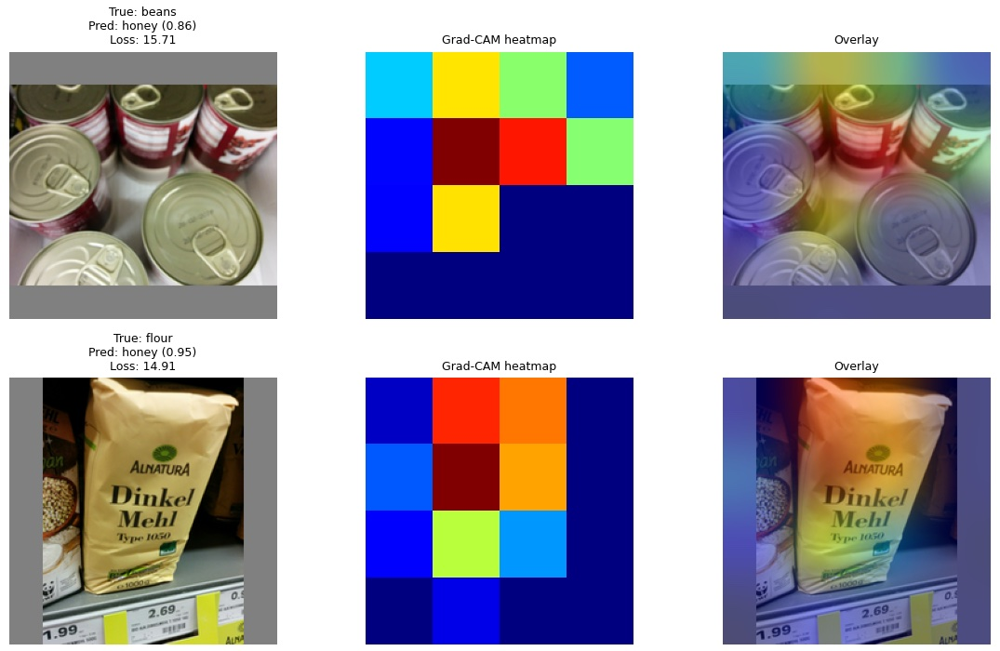

01
Grocery product classification with CNNs
Classifying photos of grocery products into 25 categories (Freiburg Groceries). I compared a convnet built from scratch, developed step by step from a baseline through augmentation to residual blocks, with a fine-tuned EfficientNetV2B0.
82.2 %test accuracy, fine-tuned EfficientNetV2B0 (vs 64.6 % from scratch)
- Regularisation alone doubled validation accuracy over the overfitting baseline
- Grad-CAM shows the from-scratch model relies on colour and shape, not texture
Python / TensorFlow / Keras / transfer learning / Grad-CAM
code on github →